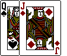

The following are the rules for pinochle that I learned at my alma mater, the University of Pennsylvania ("Penn"). Thus I've decided to name it PENN PINOCHLE. The rules differ, as I've learned, from the versions that other people play. It can be described as single-deck, four-handed, partnership, auction, and optional-racehorse pinochle.
Rules for three-handed pinochle are indicated by a (3) before them and they supersede or augment the rule before them.
PHASE 1--MELD
1) Deal:
With four people, partners sit opposite each other.
Anyone may be selected as the first dealer. The player to the dealer's
right cuts the shuffled cards and the dealer puts the two halves back
together.
Dealing starts with the player to the dealer's left and is conducted
clockwise. (Same for choosing the next dealer: the next dealer is the
player on the current dealer's left and the next is to continues
clockwisehis/her left, etc.)
Deal 4 cards at a time to each player.
(3)-option: 4 at a time to each player, and also 1 in the
center--the "widow". This is done three times. This is done
three times, then 3 cards are dealt to each player after the
three "widow" cards have been dealt.
Players should wait until the last card is dealt to pick up their hand, so
if the hand is misdealt it can be corrected without having to re-shuffle
and re-deal the deck.
Note: A misdeal may be called if any player is dealt six 9's
2) Look in your hand for:
a) AROUNDS:
-ace in each suit =10 pts.
-king in each suit =8 pts.
-queen in each suit =6 pts.
-jack in each suit =4 pts.
b) MARRIAGES:
-king and queen in a suit =2 pts. each
c) PINOCHLES:
-jack of diamonds & queen
of spades =4 pts. (16 pts. for two
if agreed upon beforehand)
d) RUN:
-A, 10, K, Q, J in trump =15 pts. (a run is only
worth this in trump!)
When calculating meld, a card may be counted twice only if it can be used
in two separate categories; e.g.: using two K/spades and one Q/spades is
not allowed to form two marriages; however, the Q/spades in a marriage
with the K/spades may be used to form a pinochle with a J/diamonds...
However, a marriage in a valid run does not count extra!
3) Estimate your bid:
=sum of Step 2 plus approximately 8-10 pts.
Note: Add more than 8-10 pts. if you have a stronger hand, less to a
weaker one
4) Bid:
Bidding starts with the player to the dealer's left. In other words, the
dealer bids last in the first round of bidding. (There may be only one
round.)
Bid: - so as to be able to name trump
- so as to be able to lead the first trick
(3)- so as to take the "widow" if one is dealt
If your hand is good enough, start at 20 or above; the first two players
bid once using the bidding chart (optional: bidding stops only
after 3 players pass)
(3)-If your hand is good enough, start at 16 or above; bidding
stops only after 2 players pass; each player bids for himself;
do not use the bidding chart
If your hand isn't good enough to start at the above limits, pass!
Do not bid more than 25 points higher than your (or your team's total meld
-- you will NOT be able to make your bid!
If all players pass before the dealer gets to make a bid, then the dealer
is "stuck" with the lowest bid (16 for 3-handed or 20 for 4-handed games)
BIDDING CHART (suggested): for 1st and 2nd bidders only in 4-player
pinochle (so as to indicate to your partner the strength of your hand)
-"pass"
-"save"=20; says to your partner: "Take the bid if you can"
-20: 4-6 pts.
-21: 4-6 pts. and power (i.e. a strong suit)
-22: 6-8 pts.
-23: 6-8 pts. and power
-24: 8-10 pts.
-25: aces around only
-30: a run
Note: A "save" bid, being the same as "20" means that anyone not passing
must bid at least 21
5) Once bidding stops:
(3)-the "widow," if dealt, is collected by the high bidder
-trump is declared by the high bidder (and is recorded on the
scoresheet; many players forget what it is)
-(optional for 4-player pinochle: high bidder's partner now
passes 3 cards to the high bidder; the high bidder passes 3 card
back to his/her partner, which may include any of the cards
just received)
6) Now, look for:
e) marriages in trump =4 pts. each
f) 9s in trump ("dix"/"deece") =1 pt. each
7) Display meld (point-earning cards), count and tally total points for
each team (each player), then collect it again
(3)-high bidder discards 3 cards before collecting his/her meld,
to make up for the extra 3 cards from the "widow"; the discarded
3 cards are not shown to the other players unless the high
bidder accidentally collects his/her meld before discarding and
does not wish to re-display the meld; this is done to insure
that meld is not being discarded, which is not permitted.
PHASE 2--PLAY
Rank of cards (descending): A, 10, K Q, J, 9
1 pt. ea. 0 pts. ea.
Note: 10 is the second-highest card!
To play:
-Follow the suit that is led...
-unless you're out of it; then you must trump...
-unless you're out of trump; then you may play
anything
-if trump is led, you must beat it...
-unless you can't; then play any trump card
(if you cannot beat it, you are not obligated
to tie it)
-The highest ranked card, or the highest trump card, wins the
trick...
-but if identical cards are played, the first one played
wins
One person in a team is expected to collect the winning trick and turn the
cards face-down. Anyone may ask to see the cards ONLY until the next
trick begins; after that, no one may look at them again
Note: you do not have to beat trump if it is not the suit LED
If your partner will likely win the trick, play a "point" from your hand
(A, 10, or K)
If your partner will likely not win the trick, play "trash" from your hand
(Q, J, or 9)
When play is over:
-Each team ((3)-each player) counts Aces, 10, and Ks only (1 pt.
for each), and adds that number to its meld; these are the "earned"
points
-The team ((3)-the player) taking the last trick earns an extra
point
Note: Total number of points among all teams ((3)-players) should equal 25
(24 for each A, 10 and K; one for the last trick)
-A team ((3)-a player) which does not meet its bid has the amount
of its bid subtracted from its score. The meld and pts. earned is
no longer considered relevant in this instance.
-The team that won the bid must take at least ONE trick to make
its bid; it does not have to be a trick with counters
-A team ((3)-a player) that does not take any points is said to
have been "schnitzed"!
NOTES:
-A game is traditionally played until one team ((3)-player) reaches 120
pts.; this may be negotiated beforehand
-If both teams ((3)-more than one player) reach 120 pts., the team
((3)-player) that won the bid wins the game, even if their final
score is lower than the team ((3)-player) that didn't
-If possible, it is useful to keep track of:
-the number of trump cards played or the number remaining
to be played
-who is trumping which suit (so as not to lose a "point"
to the other team ((3)-players))
-the number of Aces played (so as to know when your 10s
will be "good," i.e. winners)
Many thanks to Sheldon Granor for
having taught me and many of my fellow classmates the game in 1980 and
providing many years of entertainment and competition; and Randy Riesenberg and Sharon Daly
Sweeney and Mark Vavala and many others for having been such fun partners
in college; and Julie Miller for being my pinochle pal in Seattle!
Comments? Write me at RMIsaac@eskimo.com